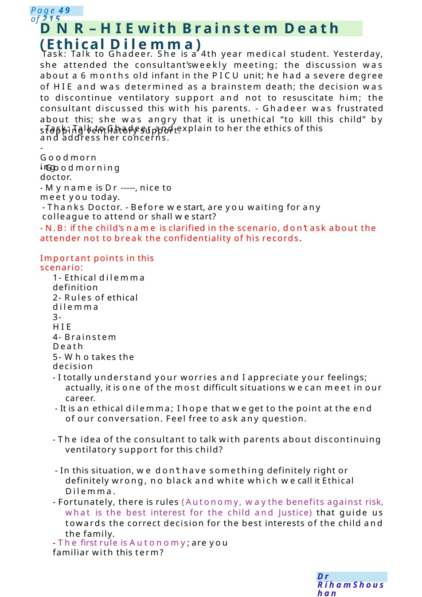
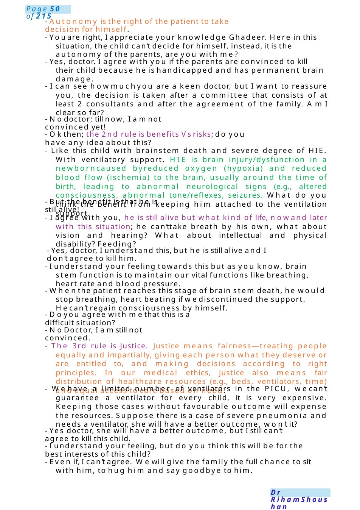

DNR– HIEwith Brainstem Death (Ethical Dilemma)
Task: Talk to Ghadeer. She is a 4th year medical student. Yesterday, she attended the consultant’sweekly meeting; the discussion was about a 6 months old infant in the PICU unit; he had a severe degree of HIE and was determined as a brainstem death; the decision was to discontinue ventilatory support and not to resuscitate him; the consultant discussed this with his parents. - Ghadeer was frustrated about this; she was angry that it is unethical “to kill this child” by stopping ventilatory support. - Task: Talk to Ghadeer and explain to her the ethics of this and address her concerns.
Scenario Summary
Task: Talk to Ghadeer. She is a 4th year medical student. Yesterday, she attended the consultant’sweekly meeting; the discussion was about a 6 months old infant in the PICU unit; he had a severe degree of HIE and was determined as a brainstem death; the decision was to discontinue ventilatory support and not to resuscitate him; the consultant discussed this with his parents. - Ghadeer was frustrated about this; she was angry that it is unethical “to kill this child” by stopping ventilatory support. - Task: Talk to Ghadeer and explain to her the ethics of this and address her concerns.
Full Original Scenario

DNR– HIEwith Brainstem Death (Ethical Dilemma)
Task: Talk to Ghadeer. She is a 4th year medical student. Yesterday, she attended the consultant’sweekly meeting; the discussion was about a 6 months old infant in the PICU unit; he had a severe degree of HIE and was determined as a brainstem death; the decision was to discontinue ventilatory support and not to resuscitate him; the consultant discussed this with his parents. - Ghadeer was frustrated about this; she was angry that it is unethical “to kill this child” by stopping ventilatory support.
- Task: Talk to Ghadeer and explain to her the ethics of this and address her concerns.
- Goodmorning.
- Goodmorning doctor.
- Myname is Dr -----, nice to meet you today.
- Thanks Doctor. - Before westart, are you waiting for any colleague to attend or shall westart?
- N.B: if the child’s name is clarified in the scenario, don’t ask about the attender not to break the confidentiality of his records.
Important points in this scenario:
1- Ethical dilemma definition
2- Rules of ethical dilemma
3- HIE
4- Brainstem Death
5- Whotakes the decision
- I totally understand your worries and I appreciate your feelings; actually, it is one of the most difficult situations wecan meet in our career.
- It is an ethical dilemma; I hope that weget to the point at the end of our conversation. Feel free to ask any question.
- The idea of the consultant to talk with parents about discontinuing ventilatory support for this child?
- In this situation, we don’t have something definitely right or definitely wrong, no black and white which wecall it Ethical Dilemma.
- Fortunately, there is rules (Autonomy, waythe benefits against risk, what is the best interest for the child and Justice) that guide us towards the correct decision for the best interests of the child and the family.
- The first rule is Autonomy; are you familiar with this term?

- Autonomy is the right of the patient to take decision for himself.
- Youare right, I appreciate your knowledge Ghadeer. Here in this situation, the child can’t decide for himself, instead, it is the autonomy of the parents, are you with me?
- Yes, doctor. I agree with you if the parents are convinced to kill their child because he is handicapped and has permanent brain damage.
- I can see howmuchyou are a keen doctor, but I want to reassure you, the decision is taken after a committee that consists of at least 2 consultants and after the agreement of the family. AmI clear so far?
- Nodoctor; till now, I amnot convinced yet!
- Okthen; the 2nd rule is benefits Vsrisks; do you have any idea about this?
- Like this child with brainstem death and severe degree of HIE. With ventilatory support. HIE is brain injury/dysfunction in a newborncaused byreduced oxygen (hypoxia) and reduced blood flow (ischemia) to the brain, usually around the time of birth, leading to abnormal neurological signs (e.g., altered consciousness, abnormal tone/reflexes, seizures. What do you think the benefit from keeping him attached to the ventilation support.
- But the benefit is that he is still alive!
- I agree with you, he is still alive but what kind of life, nowand later with this situation; he can’ttake breath by his own, what about vision and hearing? What about intellectual and physical disability? Feeding?
- Yes, doctor, I understand this, but he is still alive and I don’t agree to kill him.
- I understand your feeling towards this but as you know, brain stem function is to maintain our vital functions like breathing, heart rate and blood pressure.
- Whenthe patient reaches this stage of brain stem death, he would stop breathing, heart beating if wediscontinued the support. Hecan’t regain consciousness by himself.
- Doyou agree with methat this is a difficult situation?
- No Doctor, I amstill not convinced.
- The 3rd rule is Justice. Justice means fairness—treating people equally and impartially, giving each person what they deserve or are entitled to, and making decisions according to right principles. In our medical ethics, justice also means fair distribution of healthcare resources (e.g., beds, ventilators, time) and equal access to care based on need.
- Wehave a limited number of ventilators in the PICU, wecan’t guarantee a ventilator for every child, it is very expensive. Keeping those cases without favourable outcome will expense the resources. Suppose there is a case of severe pneumonia and needs a ventilator, she will have a better outcome, won’t it?
- Yes doctor, she will have a better outcome, but I still can’t agree to kill this child.
- I understand your feeling, but do you think this will be for the best interests of this child?
- Even if, I can’t agree. Wewill give the family the full chance to sit with him, to hug him and say goodbye to him.

DNR– Epicure
Task: Talk to Miss Rania a nurse in NICU. She Has a Concern about Ababy has just been delivered at 24 weeks gestation. The team is preparing for resuscitation and stabilization. Miss Rania wants to clarify:
- survival chances
- ethical considerations
- resuscitation plan
- long-term complications She also wants to knowhowto support the parents.
Doctor: “Hi Rania, thanks for asking. I understand you want to discuss the situation regarding the baby born at 24 weeks and what weshould expect.
Nurse: Yes, exactly. I want to be clear so I can support the parents and understand the plan.”
Doctor: For babies born at 24 weeks, survival has improved significantly with modern neonatal care. According to UKdata from the Epicure study, roughly 50–60%of babies survive with intensive care.
Nurse: That’s encouraging. But what about long-term outcomes?”
Doctor: That’s an important point. Amongsurvivors, some children develop normally or with mild difficulties, but others mayhave long-term complications such as developmental delay, cerebral palsy, or sensory problems.
Nurse: This situation can be ethically difficult. Howdo weapproach that?
Doctor “Yes, these cases involve important ethical principles.
1.Autonomy “Parents should be involved in decision-making and informed about options.
2. Beneficence “Weaim to provide treatment that benefits the baby.
3.Non-maleficence “We must avoid causing unnecessary harm, especially if the prognosis is very poor.
4. Justice “Wetreat patients fairly and use healthcare resources responsibly.
Andwemust Practice decision-making with parents while focusing on the baby’s best interests. Nurse: “What is our immediate management plan?
Doctor: "Wewill follow neonatal resuscitation guidelines.” Keysteps include:
●Full resuscitation team present
●Prepare airway equipment
●Consider intubation and surfactant